ついにカウンター最強時代!? モハメド・サラーのピックアップSP選手スカウトは引くべき？新SP選手4名を徹底評価
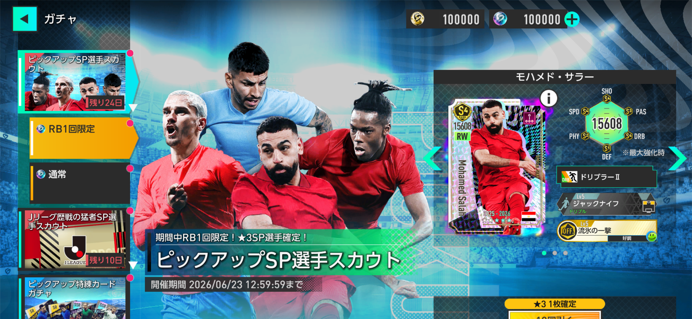
2026年5月29日更新のピックアップSP選手スカウトでは、モハメド・サラー、アントワーヌ・グリーズマン、ニコ・ウィリアムズ、アンヘル・コレアの新SP選手4名が登場しました。 今回は単純に有名選手が追加されたというだけでなく、カウンター、リアクション、ポゼッションそれぞれの金フォーメーションコンボ環境に影響する選手が含まれています。 特にサラーとグリーズマンは、現環境の最強チーム編成を考えるうえで無視しにくい性能です。
結論：グリーズマン狙いなら引く価値あり。サラーはカウンター強化なら大当たり
今回のガチャは、全員が同じレベルで大当たりというより、明確に当たり選手と様子見候補が分かれるタイプです。 最大の注目はリアクションAMのアントワーヌ・グリーズマンで、現時点ではリアクション編成の中心になれる性能を持っています。 次点でモハメド・サラーも非常に優秀で、カウンターRWを強化したいプレイヤーなら十分に狙う価値があります。
一方で、ニコ・ウィリアムズとアンヘル・コレアは弱い選手ではありませんが、代用候補や上位互換の存在を考えると、無理に深追いする必要は低めです。 「リアクションAMを強化したい」「カウンター3トップを本気で組みたい」人向けのガチャと考えるのが分かりやすいです。
ガシャの注目ポイント
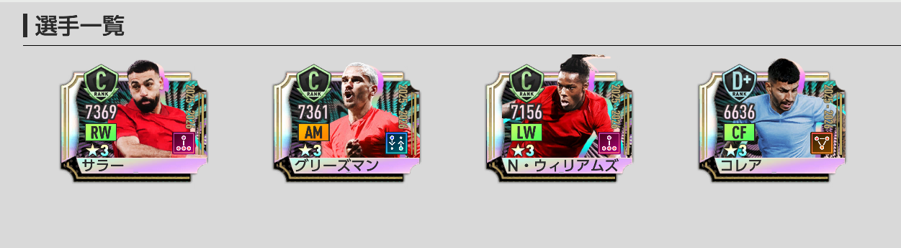
- ★3の排出率は5%。
- 排出される★3選手は、2026年3月31日までに登場した選手のみ。
- RB1回限定★3確定10連は、ピックアップ確定ではなく、すべての★3SP選手の排出確率が同じ。
- 新SP選手がピックアップ確率で引けるのは「通常」タブのガチャ。
- 開催期間終了後は、次回以降のアップデートで恒常ガチャに追加予定。
- ピックアップSP選手スカウトメダルは、期間終了後に1枚につきSP選手スカウトメダル1枚へ変換。
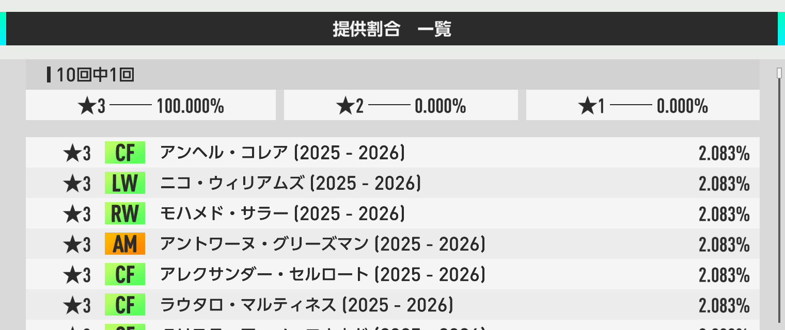
RB1回限定★3確定10連の注意点
RB1回限定の★3確定10連は魅力的に見えますが、今回追加された4名のピックアップ確定ではありません。 画像の提供割合を見ると、★3枠の中ではすべてのSP選手が同じ確率で並んでおり、サラーやグリーズマンだけが特別に出やすいわけではありません。 新SP選手を狙う場合は、基本的に「通常」タブのピックアップ枠を確認して引くべきです。
もちろん★3SP選手を1体確保できるという意味では悪くありません。 ただし「サラー狙い」「グリーズマン狙い」でRB確定枠に期待しすぎると、想定よりも狙いがブレやすい点には注意しましょう。
新SP選手4名の性能評価
モハメド・サラー

基本性能
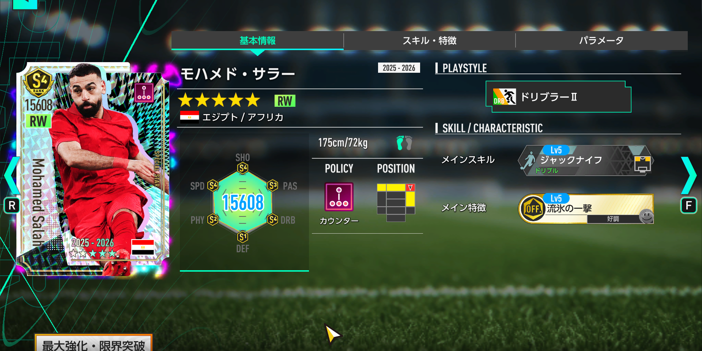
- ポジション：RW
- ポリシー：カウンター
- プレイスタイル：ドリブラーⅡ
- 初期総合力：7004
- 最大強化：15608
サラーは、初期総合力が全SP選手中1位という時点で非常に強力です。 同ポリシーのカウンター選手内でも60人中1位、同ポジションのRWでも10人中1位、同プレイスタイルのドリブラー系でも27人中1位と、ランキング面では文句なしのトップクラスです。 カウンターRWのドリブラーⅡは★3SPミゲル・アルミロンに続いて2人目ですが、総合力と所持特徴を考えると、実質的には完全上位互換に近い存在です。
スキル・特徴評価
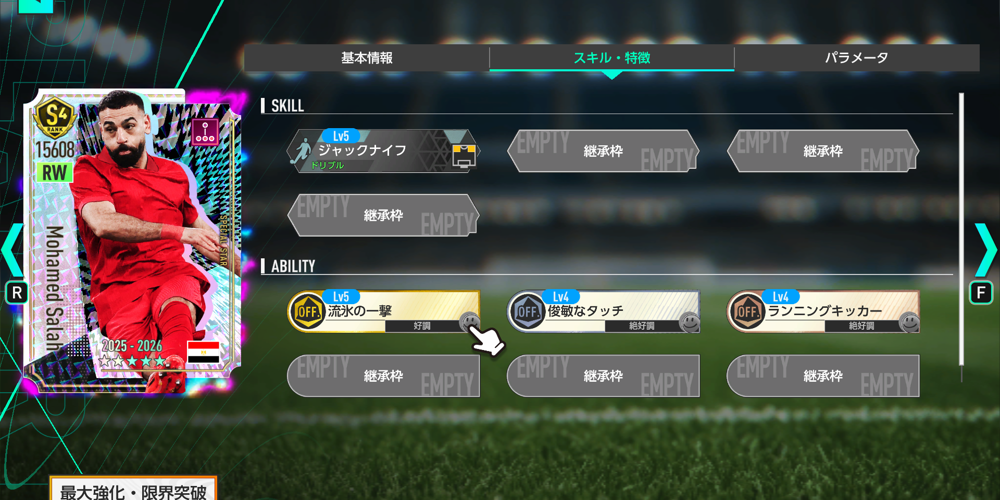
金フォーメーションコンボ「リーベル'18」の発動条件キー選手として採用できる点も大きな強みです。 3トップ系のカウンター編成を強化したい場合、RWに高総合力のドリブラーを置けるだけでチーム全体の完成度がかなり上がります。 「ディアボロ・ディ・ミラノ'99」など、サイドに強力なアタッカーを置きたい編成でも使いやすく、カウンター監督なら優先して確保したい選手です。
おすすめ度：
全SP選手トップの初期総合力、最大強化でも全SP選手中8位という高さを考えると、性能面ではかなり優秀です。 ただし、RW最強候補の★3SPブカヨ・サカを所持済みの場合は、スキル「ジャックナイフ」が共通で、リーベル'18の条件もサカで代用可能です。 サカを持っていないカウンター使いなら大当たり、サカ所持済みなら手持ち次第で優先度を調整しましょう。
アントワーヌ・グリーズマン

基本性能
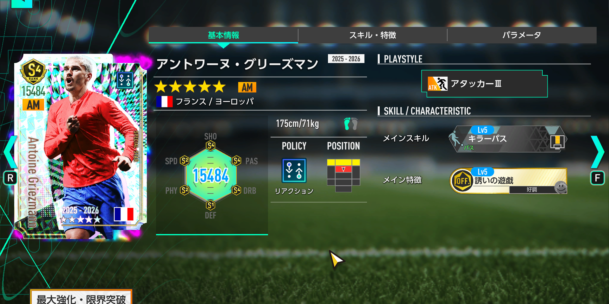
- ポジション：AM
- ポリシー：リアクション
- プレイスタイル：アタッカーⅢ
- 初期総合力：6983
- 最大強化：15484
グリーズマンは今回のガチャで最も評価が高い選手です。 総合力は全SP選手中4位、リアクション選手内では58人中1位、AMでは31人中1位、アタッカー系でも21人中1位と、主要な比較軸すべてでトップクラスです。 さらにプレイスタイル「アタッカーⅢ」は全SP選手で初実装となるため、現状では唯一無二の価値があります。
スキル・特徴評価
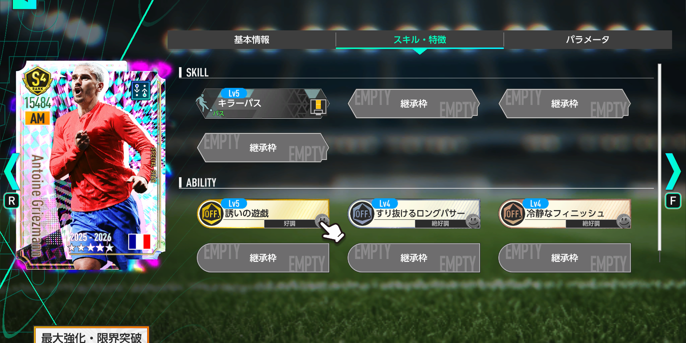
金フォーメーションコンボ「エンカルナードス'23」の発動条件キー選手として採用できるだけでなく、リアクション金フォメコン全体でAMの重要度が高い点も見逃せません。 特に「ゴーデンゾーネン'95」のようにAMを複数起用する編成では、既存の強力なAMと並べて使うことでチームの総合力を大きく引き上げられます。 リアクション編成をメインにしているなら、今回の最優先確保候補です。
おすすめ度：
リアクションAMはSP選手が7名存在しますが、その中でもグリーズマンは現状最強候補です。 ★3ジョアン・ペドロを所持している場合でも、AM2枚起用の編成では同時採用できるため価値が落ちにくいです。 今後アタッカーⅢが条件になるフォーメーションコンボが増えれば、さらに評価が上がる可能性もあります。 今回のガチャで1番の大当たりと見ていいでしょう。
ニコ・ウィリアムズ

基本性能
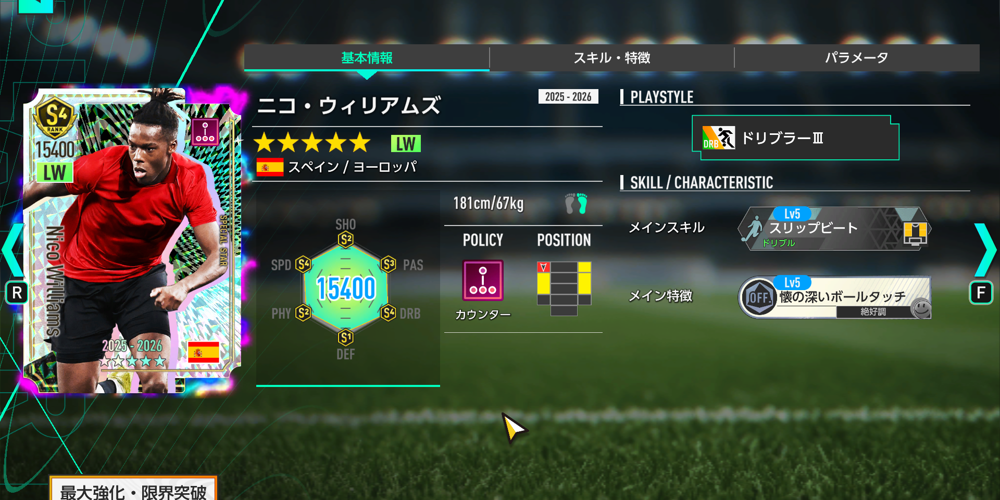
- ポジション：LW
- ポリシー：カウンター
- プレイスタイル：ドリブラーⅢ
- 初期総合力：6739
- 最大強化：15400
ニコ・ウィリアムズは、カウンターLWのドリブラーⅢとして見るとかなり貴重な選手です。 総合力は全SP選手中27位、カウンターでは60人中10位、LWでは14人中2位、ドリブラー系では27人中3位と、上位ではあるもののサラーやグリーズマンほど突出しているわけではありません。 ただし、LWドリブラーⅢは全SP選手で初実装のため、今後のフォメコン条件次第では評価が大きく上がる可能性があります。
スキル・特徴評価
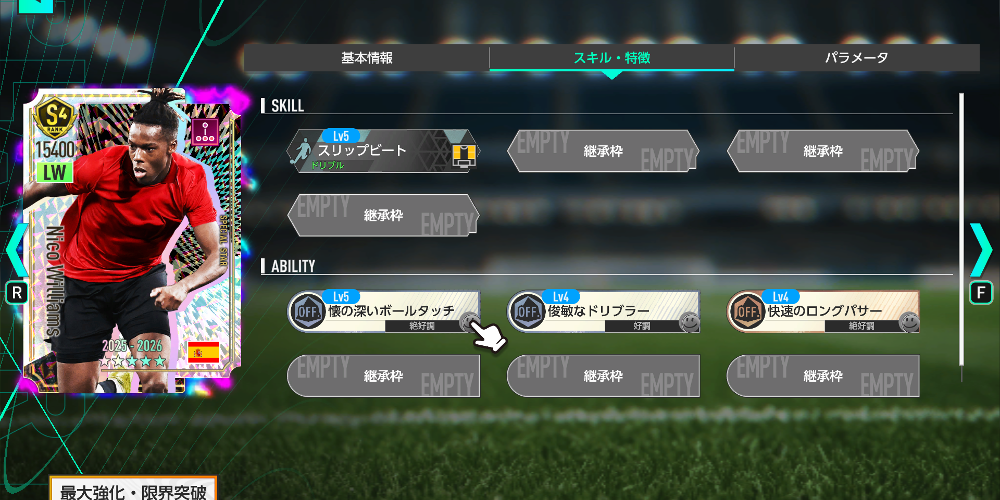
金フォーメーションコンボ「ディアボロ・ディ・ミラノ'99」の発動条件キー選手として採用できますが、条件自体はドリブラーⅡなので、必ずニコ・ウィリアムズでなければならないわけではありません。 ★3SPブカヨ・サカがRWのドリブラーⅢであることを考えると、両サイドをドリブラーⅢで固められる点は魅力です。 ただし、LWには★3SPクヴィチャ・クヴァラツヘリアなど強力なライバルもいるため、カウンター染め以外では優先度がやや下がります。
おすすめ度：
カウンターLWを強化したい人には十分当たりですが、代用候補が多い点は気になります。 ドリブラーⅡでよければ★3SPファン・ヒチャンやJリーグSP原大智、ポリシー不問なら★3SP三笘薫も候補に入ります。 現時点では「欲しい人は狙ってもいいが、無理に深追いするほどではない」くらいの評価です。
アンヘル・コレア

基本性能
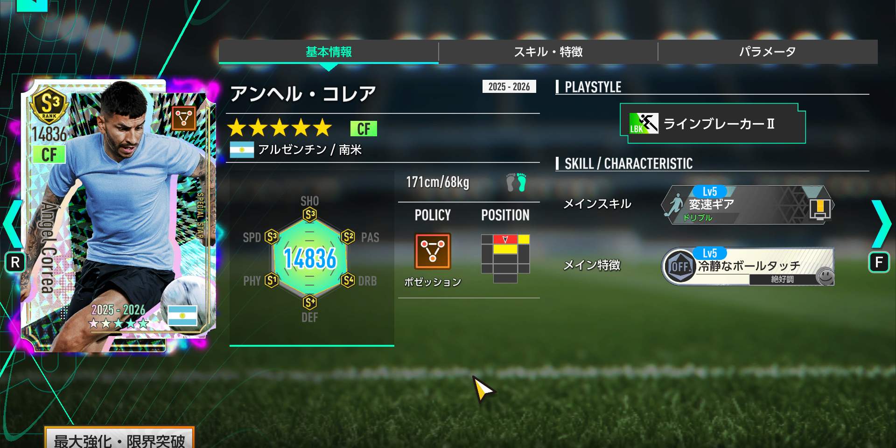
- ポジション：CF
- ポリシー：ポゼッション
- プレイスタイル：ラインブレーカーⅡ
- 初期総合力：6449
- 最大強化：14836
コレアは、今回の4名の中では最も評価が控えめです。 総合力は全SP選手中60位、ポゼッションでは59人中16位、CFでは41人中10位、ラインブレーカー系では16人中4位と、弱くはないものの突出した順位ではありません。 ポゼッションのラインブレーカーⅡはSP選手では6人目で、すでにラインブレーカーⅢを持つ★3SPソン・フンミンや★3SP GOAL!DEN柿谷が存在しています。
スキル・特徴評価
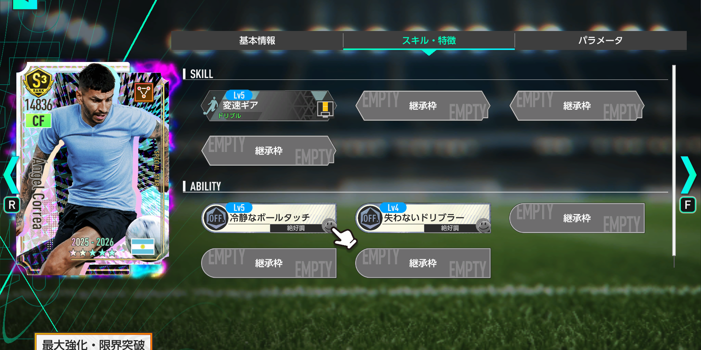
現時点で発動条件と完全一致する金フォーメーションコンボがない点も評価を下げる理由です。 所持スキル「変速ギア」と所持特徴「冷静なボールタッチ」の構成は、★3SP GOAL!DEN柿谷と同じで、総合力面ではコレアが下になります。 そのため、すでにGOAL!DEN柿谷やソン・フンミンを持っている場合は、急いで確保する必要は低いです。
おすすめ度：
GOAL!DEN柿谷を持っていない人にとっては、ポゼッションCFの選択肢として使える場面があります。 また、ソン・フンミンは途中交代トリガーの特徴を持つため、スタメンをコレア、交代要員をソン・フンミンにする運用も考えられます。 ただし今回のガチャで最優先に狙うべき選手ではなく、サラーやグリーズマンを狙う過程で引けたら使い道を考えるくらいで十分です。
今回のガチャは誰が引くべき？
引くべき人
- リアクション編成を強化したい人。
- グリーズマンを狙ってリアクションAMを更新したい人。
- カウンター3トップを本気で組みたい人。
- サラー未所持で、RWの高総合力ドリブラーが欲しい人。
- 金フォメコン「リーベル'18」「エンカルナードス'23」を強化したい人。
様子見でもいい人
- ブカヨ・サカなど強力なRWをすでに所持している人。
- リアクション編成を使っていない人。
- 恒常ガチャ追加後にゆっくり狙いたい人。
- コレアやニコ・ウィリアムズだけを目当てにしている人。
おすすめ度ランキング
- アントワーヌ・グリーズマン：リアクションAM最強候補。今回の大当たり。
- モハメド・サラー：カウンターRW強化なら大当たり。初期総合力1位が強い。
- ニコ・ウィリアムズ：カウンターLWドリブラーⅢは貴重。ただし代用候補あり。
- アンヘル・コレア：使い道はあるが、上位互換や競合が多い。
まとめ
今回のピックアップSP選手スカウトは、グリーズマンとサラーの2名が明確な当たり枠です。 グリーズマンはリアクションAMとして現環境トップクラスで、今後のフォメコン追加によってさらに価値が上がる可能性があります。 サラーも全SP選手中トップの初期総合力を持ち、カウンターRWの強化として非常に優秀です。
一方で、ニコ・ウィリアムズは将来性込みの評価、アンヘル・コレアは手持ち次第の補強枠という印象です。 全員を狙うガチャというより、「グリーズマンを最優先、カウンターを使うならサラーも狙う」という判断が一番おすすめです。 RB1回限定の★3確定10連はピックアップ確定ではないため、新選手を狙う場合は必ず提供割合とタブを確認してから引きましょう。
選手評価ツールも活用しよう
各選手のポジション別順位、ポリシー別順位、プレイスタイル別順位、対応フォーメーションコンボを詳しく確認したい場合は、サイト内の「選手評価ツール」もおすすめです。 記事内の評価とあわせて、自分の手持ちや使いたいフォメコンに合うかチェックしてみてください。